HTML 학습 시행 확인
Html(Hyper Text Markup Languge)사용법 공부는 TAG를 잘 알아야 한다.
OT~STRONG~T CTT ; 진한 글자 모양.
OT~U~T CTT ; under line.
OT~h1~T CTT ; 큰 글씨 제목. h~high, 검색측면을 고려하여 title h1~6 잘 사용 할 것
OT~br~T CTT ; 줄바꾸기, 줄띄우기
OT~P~T CTT ; 단락 표시
OT~img src="사진 주소" unsplash에서 다운 받아서 web folder에 저장. 이름 너무 길어 rename에서 간략히 바꿈
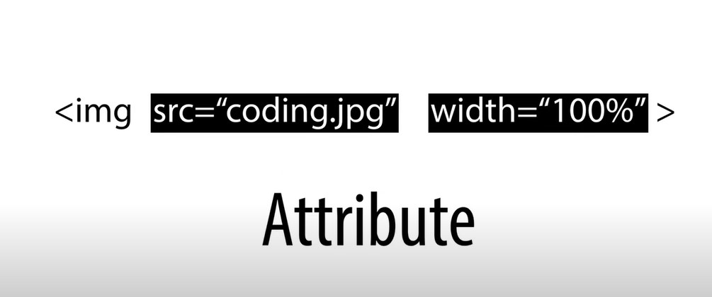src, width등은 속성(Attribute) 속성은 각각 위치는 관계없음
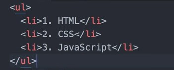그룹핑하여 다른 그룹과 구별하기 위해 상위 OT~ul~T CTT, 하위 OT~li~T CTT 사용
상위 OT~ol~T CTT은 리스트의 넘버 매김. li~list, ol~order list, ul~unorder list
하위 태그가 3대로 이루어짐
| 시간 | 과목 |
|---|---|
| 아침 | 중용, 손자병법, 주역, 전충록, 구동사, 경락작용 |
| 오전 | 경혈자리 영문정리, 경전한자 |
| 오후 | 내과학, 기공 |
| 저녁 | GCM, 상한론, 본초학, 영단어법, HTML |
OT~!DOCTYE HTML~T은 HTML 서류라는 declaration
OT~HEAD~T 웹의 유형 설정
OT~title~T 제목 CTT 은 제목 즉 책표지의미
OT~meta charset="UTF-8"~T은 Universal Character Set Transformation Format-8-bit. 유니코드를 인코딩하기 위한 가변길이 문자 인코딩 방식
하이퍼텍스트 만들기 : OT~a~T 지정단어 T. 설정 : href="링크한 주소" . href:hypertext reference . target="_blank" 새 창에서 열기. title="설명내용" tool tip
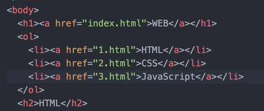웹사이트 편집을 위한 정지 작업
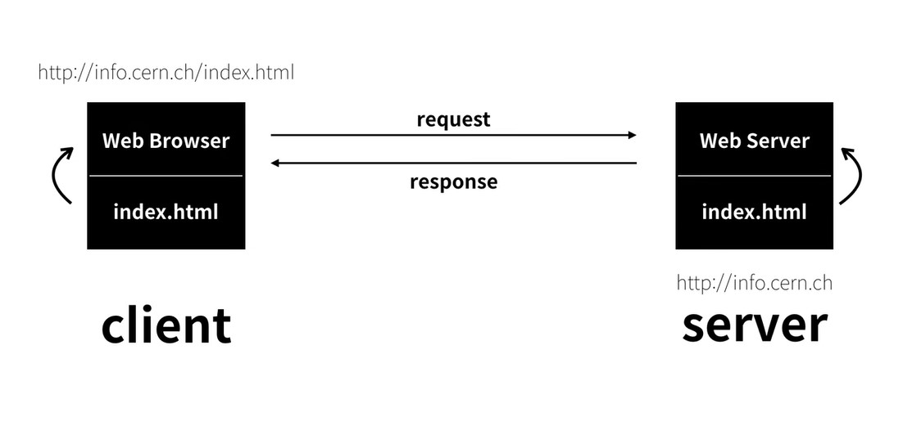만들어진 웹 내용을 공유하는 개념
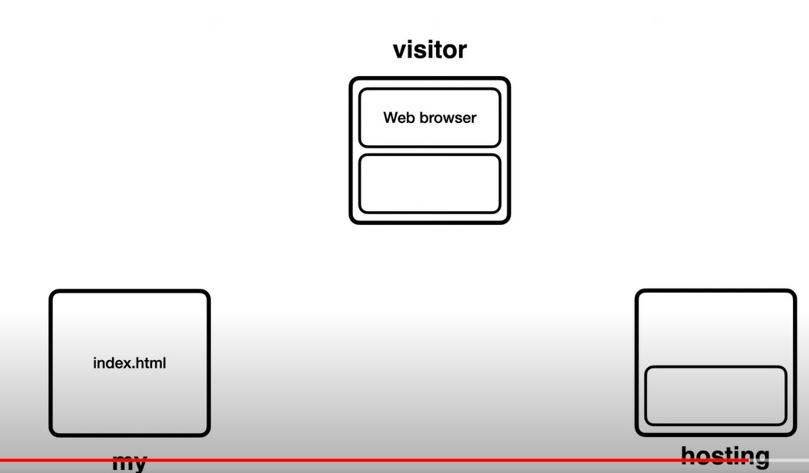 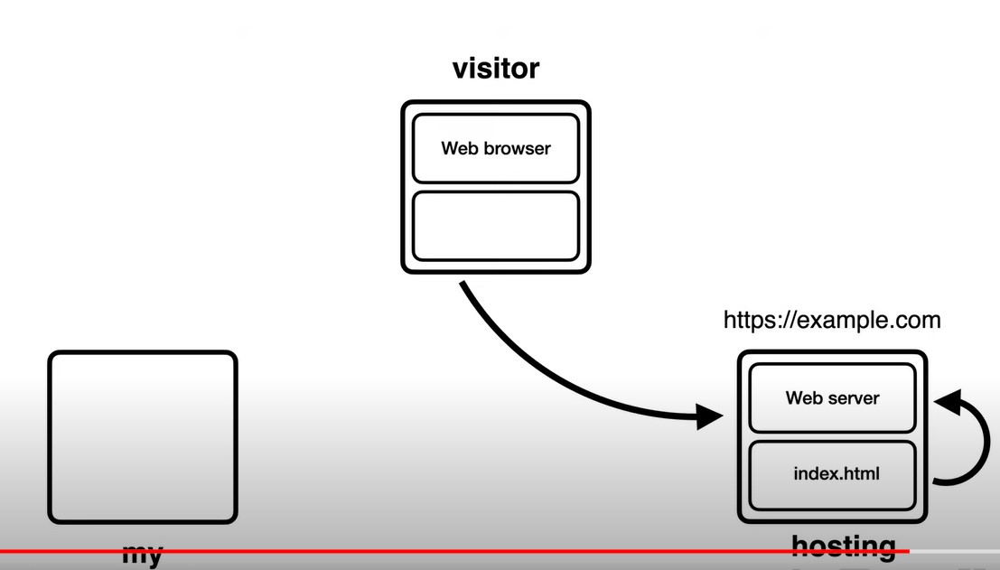 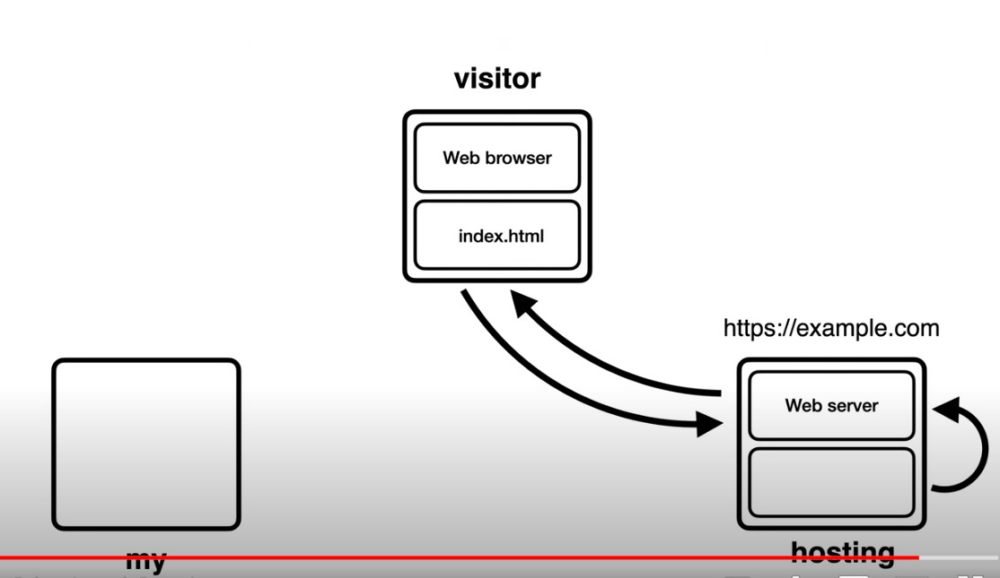www ; world wide WEB
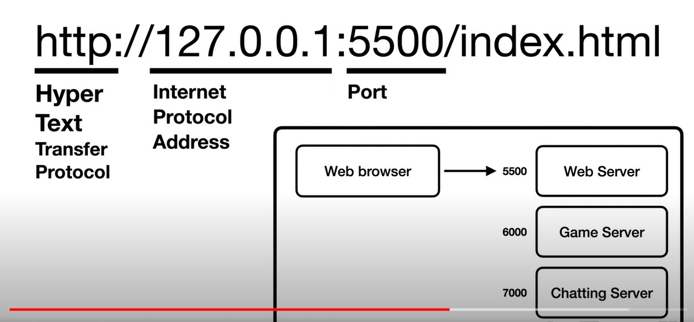인터넷 관련 교양 정리 ~ 1960년대 미국에서 핵공격으로 인한 통신 시스템 붕괴에 대응하기 위해 중앙집중식 시스템이 아니라 그물망 구조의 통신시스템이 구축됨
1990년대 스위스 제네바에 유럽입자물리연구소(CERN)의 LHC에서 팀버너스리 등에 의해 WEB개발
팀버너스리가 최초로 만든 웹
web hosting / web sever
web hosting 자신이 만든 web을 회사에게 맡겨서 공유
hosting또는 cloud역할을 무료로 운영되는 곳중 하나 GitHub에 들어가서 Sign Up하여 가입 Sign in. 하여 입장
자신이 coding한 web을 GitHub에 저장한 Repository(저장소) 클릭 확보
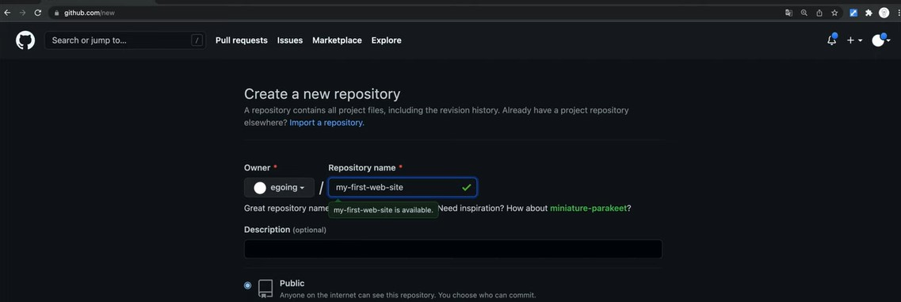repository만들고, repository name 만듦. create repository 클릭
uploading an exsiting file 클릭함
choose your file등으로 WEB의 파일 전체 선택
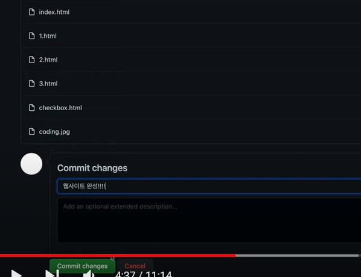작업 내용 간단히 기재, 하단 commit changes버튼 클릭
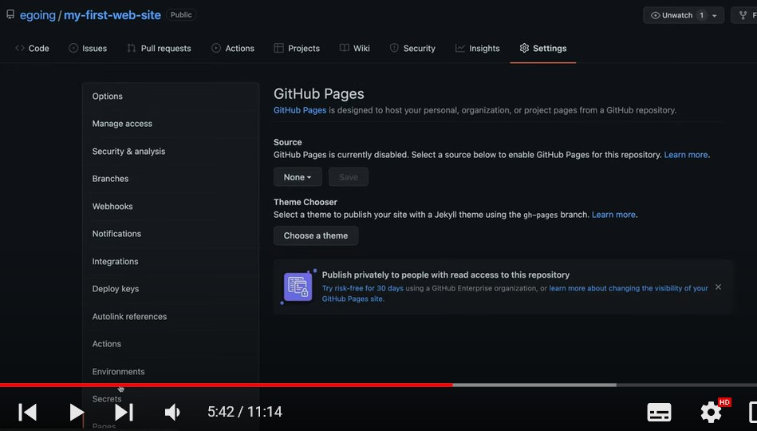홈페이지 인터넷 올리기 ; seeting 누르면 사이드 항목 나타남, 그중 pages클릭
none버튼 클릭 -> MAIN누르고, save클릭하고 기다림. 진행상황은 Actions 눌러서 진행사항 확인
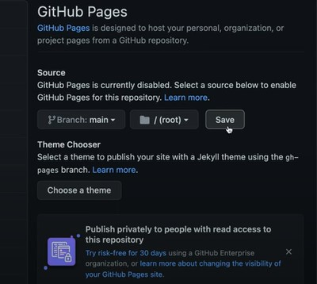 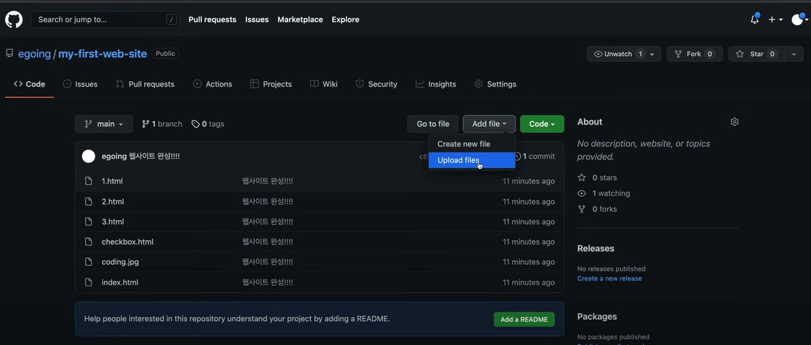홈페이지 게시됨. 수정하고 싶을 때 add file에서 처리.
action가서 진행상황 확인하고 deploy 클릭하여 확인
WEB SAVER MAKING
자신의 컴퓨터를 서버로 만들어서 다른 컴퓨터가 공유하도록 함

네모 세개에서 한개 네모 떨어져나간 이모티콘(확장) 누르고 liver sever치고 install클릭
Go Live나타나면 인스톨 성공. PORT:5500 표시되면 web sever 시행됨
 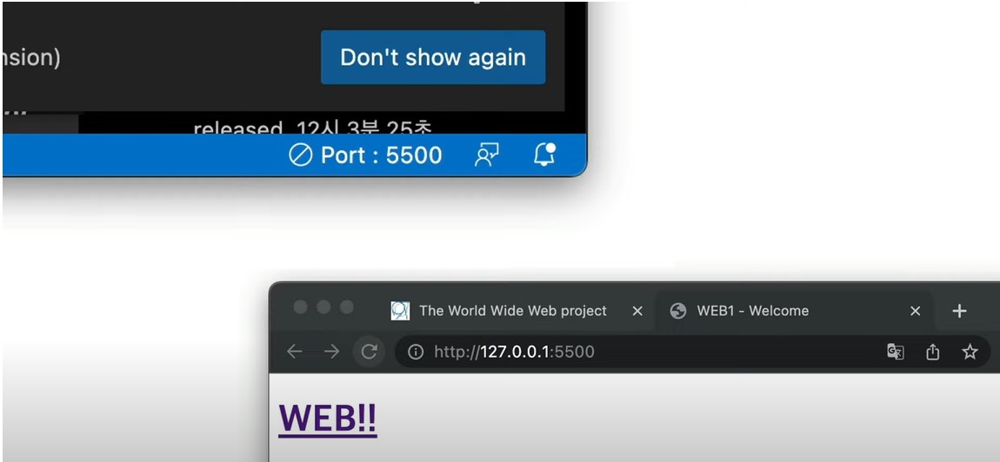
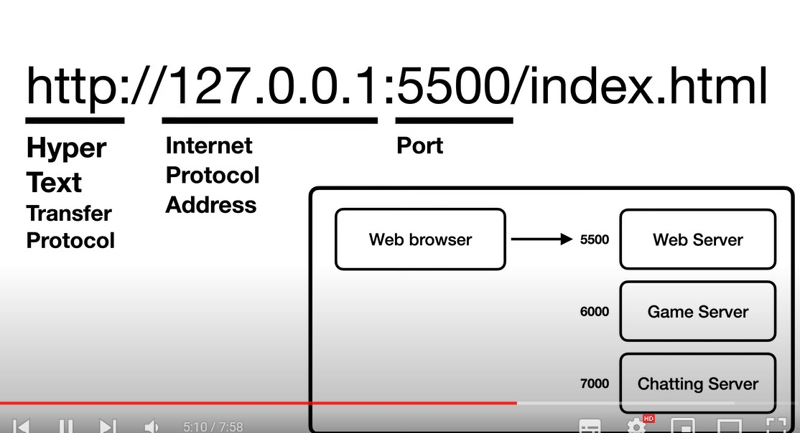
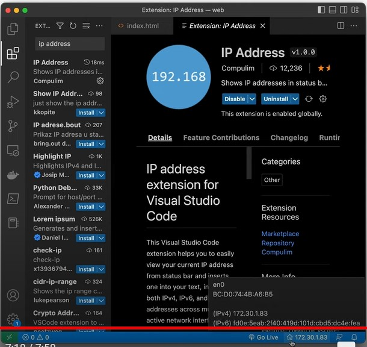
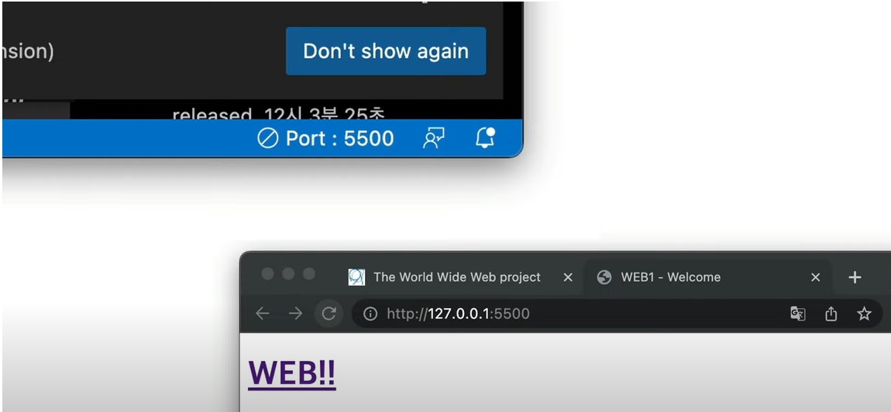
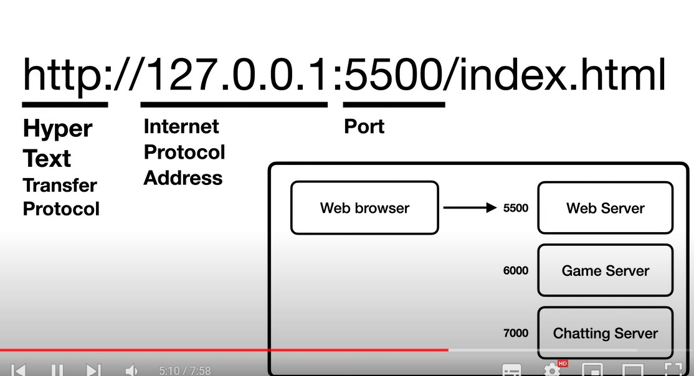
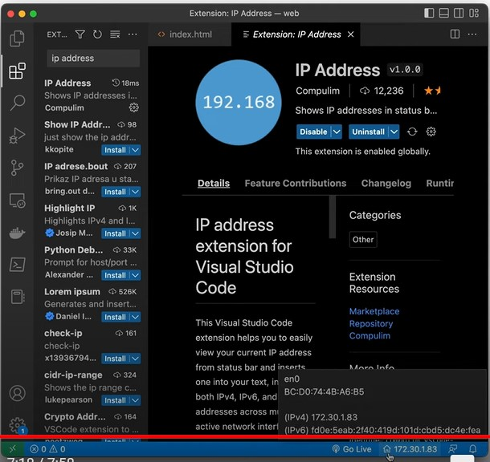
확장자에 ip address치면 아랫 하단에 숫자 나타남
동영상 넣기
유튜브의 동영상을 링크하기
타켓 동영상에서 공유클릭하고 퍼가기 클릭한 후 코딩내용 복사해서 붙이기